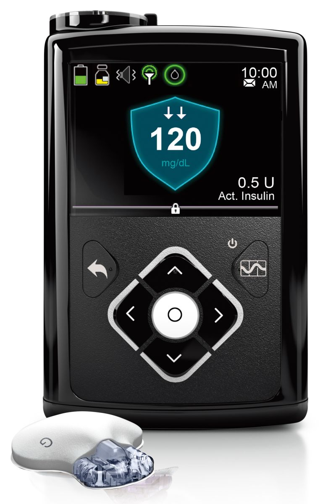
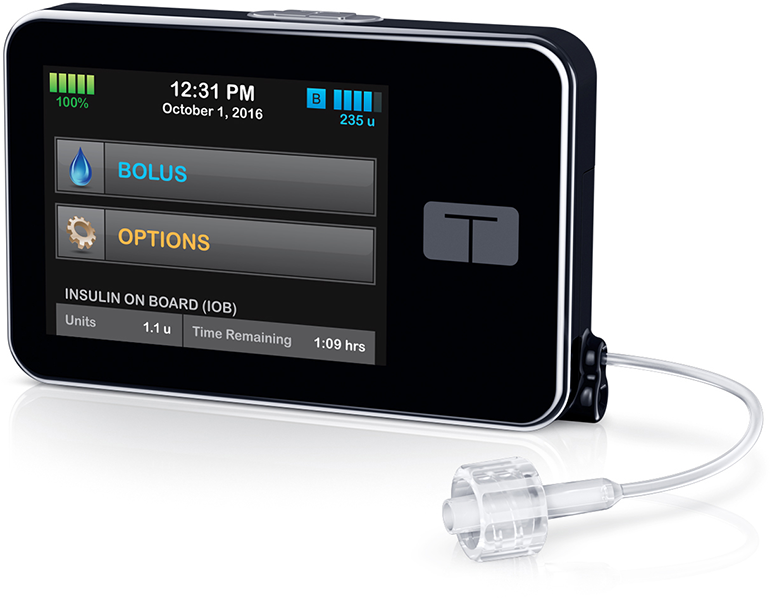

Type 1 Diabetes is an autoimmune disease in which an individual's immune system has attacked and killed the insulin producing cells in the pancreas which are also known as "beta cells." Type 1 Diabetics must constantly supervise their blood glucose levels in order to maintain healthy levels. Those with Type 1 Diabetes are in constant battle with their blood sugar going LOW and/or HIGH. A normal blood sugar level is around 100 mg/dL. However, Type 1 Diabetics can go both above and below this value.
Type 1 Diabetes is NOT caused by a poor diet or "eating too much sugar." If you still are not convinced of this statement, then follow this link which contains information about the topic. Scientists have discovered that Type 1 Diabetes is contributed to by genetic factors as well as factors that are still unknown to this day. Scientists propose that the onset of T1 Diabetes could be due to children encountering viruses that make their immune systems' "go into "overdrive," causing their bodies to attack their own cells.
Individuals with Type 1 Diabetes would DIE within 2-3 days if they did not administer themselves insulin. Individuals have two options for administering insulin and both involve the subcutaneous injection of insulin:
Those who choose to manually inject insulin utilizing syringes must administer two types of insulin:
Examples of long-acting insulin are Lantus, Levemir, and Tresiba. The cost of a vial (1000u/vial) of each of these brands are $276, $321, and $466, respectively. Each individual's needs will differ, but on average, a patient will require one vial every 2-3 months. As you can tell, expenditures on insulin can get pricey very easily. The most commonly used rapid-acting insulins are Humalog, Novolog, and Apidra. The cost for a vial of each of these brands are $549, $551, and $423 respectively.
However, those who choose to utilize insulin-pump therapy have some advantages. Pump users only use rapid-acting insulin and they are able to inject one needle into their bodies which will last for 3 days instead of having to give themselves multiple injections per day. This sounds like a no-brainer decision, but insulin pump therapy is extremely expensive compared to manual injections.
The cost of some common insulin pumps can be seen below:
| Medtronic MiniMed | Animas Vibe | Tandem t:slim | Insulet OmniPod |
|---|---|---|---|
| $7,350 | $7,000 | $6,999 | $1,800 |
|  |  |
Not only are insulin pumps expensive, but the regular cost for supplies is expensive as well! Thousands of dollars can be spent monthly on pump supplies.
Writer: Jason Quattlebaum
CSCI 1100 Lab
University of Georgia
Credibility: Type 1 Diabetic